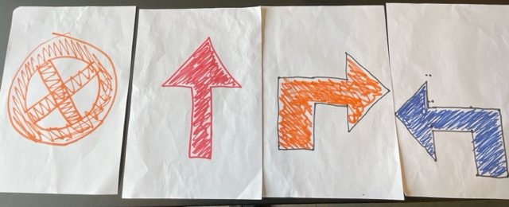
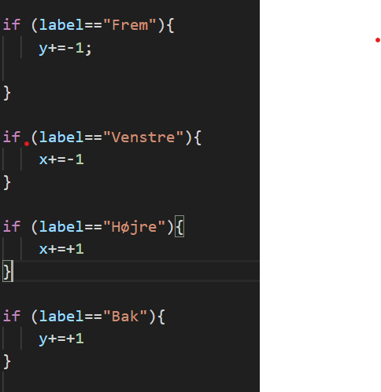
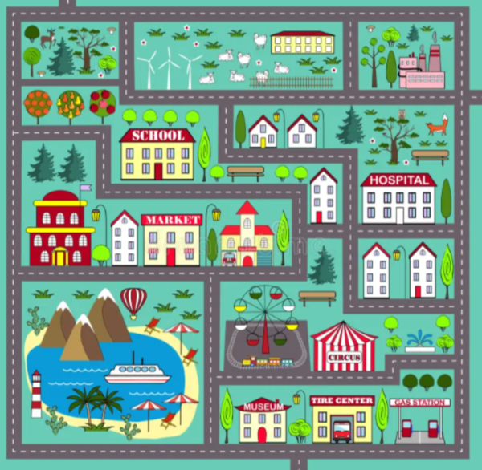

Vi skulle udvikle et program der hvor en bil ved hjælp af input fra kameraet kan navigere på en virtuel bane og kan stoppe for rødt.
Vi startede med de teoretiske overvejelser, og overvejede hvordan vi i starten kunne på den mest enkelt måde udføre de 2 krav for vores opgave. Derfor valgte vi at lave 4 pile for at bevæge rundt på banen: op, ned, højre, venstre og stop for at kunne stoppe ved rødt lys.

Herefter begyndte vi på vores "bil" som i starten bestod af at være en cirkel eller ellipse. Vi fokuseret på at få den til at tage vores input og derefter vælge en retning som vores cirkel skulle bevæge sig i. Her er det muligt at se denne kode:

Her er det muligt at se vores input som er vores forskellige labels, så Højre, Venstre, Bak og Frem. Herefter ville vores x og y variabler ændre værdi. Så ved Højre vil vores x værdi stige og derfor bevæge vores cirkel mod højre og omvendt ved venstre.
Dog er vores y-værdi atypisk grundet at start punktet er i oppe venstre hjørne, derfor vil vores y værdi stige ved Bak, og selfølgelig omvendt ved Frem.
Herefter valgt vi at fokuserer på vores baggrund, hvor vi havde originalt tænkt at vi ville have et barndoms tæppe med, men vi fandt ud af at det havde ekstrem mange sving der ikke var 90 grader.
Grundet at vores bil kun har mulighed for at bevæge sig med de 4 retninger ville det ikke passe godt sammen. Derfor valgte vi at tage noget lignende men med rette vinkler og veje så det passede bedre til vores bil eller cirkel.

Herefter satte vi vores bil ind, istedet for vores cirkel.